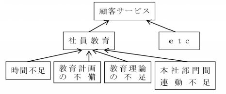

| 「マネジメントの真髄」シリーズ10(30巻予定): 成功する経営の原理 原則「人間心理・集団心理・組織強化・リーダーシップ」編 | |
| 冨澤 翕 | |
| UNKNOWN (2015) | |
マネジメントの真髄
シリー ズ 10
その2
「人間心理・集団心理・組織強化・リーダーシップ」編 No. 2 ( 全 1 1 回予定)
「これで、人は動く・組織は強くなる」
シリーズ10
「人間心理・集団心理・組織強化・リーダーシップ」編 No.2 の 「目次」
第4章：体質的問題の重要性
1.技術的問題と体質的問題
1 ) 技術的問題
2 ) 分かっちゃいるけど出来ないこと
3 ) 本当の"問題"
4 ) 体質的問題
5 ) 体質的問題の重要性
2.企業の目的、方針と問題領域
3.データ・ベースとしての心理学
1 ) 仕入問題の特 徴(例 )
2 ) 心理学とマネジメント
3 ) パーソナリティー
第5章：欲求とモーティベーション
1.はじめに
1 ) リーダーシップは表面張力によって生まれる
2 ) 欲求とは
2.協力の条件
3.欲求理論
1 ) マズローの欲求体系
2 ) 欲求段階
4.社会的欲求の重要性
5.満たされたる欲求
6.満たされざる欲求
1 ) 満足されたる欲求は、モーティベーターにはならない。
2 ) 下位欲求がある程度満足されないと、上位欲求はモーティベーターにはならない。
7.表面行動では分からない
8.本能との比較
1 ) 自我の重要性
2 ) 自我と社会的欲求
9.自我の尊厳
参考資料：自我の芽生え～形成
10.日常業務に生かす為には
1 ) 自主性とは参画
2 ) 生命保険会社のケース
3 ) 研究開発のケース
4 ) 両者の比較
5 ) 女性プログラマーのケース
6 ) 三者の比較
11.自己開発の機能
12.責任と権限
1 ) 責任とは
2 ) 権限
第4 章
体質的問題の重要性
1.技術的問題と体質的問題
多くのマネジャーが行う問題解決の仕方を見ていると、形 式的には問題構造が掴まれている が " 本当の問 題" が掴まれていない と感じる時が多い。
201 5 年になってもシャープやソニー、パナソニック...等々、大手家電業界の不振が取り沙汰されているが、各種報道で見る限りにおいては 体質的問題 が等閑に付されているように感じる。
また「個人情報流失」問題で揺れる日本年金機構の報道を見る限りにおいて、根本的問題として 体質的問題 がある。
東芝の「不適切会計」問題も第三者委員会なるものに委ねられているようだが、非公式情報から類推するとトップの問題に加えて根本的問題として 体質的問題 があるようである。
あるいは 、 NH K の「戦 後 7 0 年の歩み」に関する特集の中で、倒産し た SANY O の元会長へのインタビューや日銀元理 事( 金利に関する意思決定の失敗な ど) ...等々へのインタビューがあったが、やはり根本的問題は 体質的問題 であった。
元会長は「 未だに倒産原因を模索中 」だという。
トップは「裸の王様」化していて"現場の実態"を知らないようである。
どの企業や団体も「戦略的問題」や「技術的問題」には強い関心があっても、あるいは「ハード」「ソフト」の領域には関心があっても 「体質的問題」 や 「ヒューマン」 領 域( いずれも、人に関する領 域) には関心が無 い( 薄 い) 。
特に、 労働者を資本家の金儲けの道具と考えている経営者においては顕著 である。
大手には大手の悩みが内在しているとは言うものの、このような本質的問題構造に関しては中小零細企業と同じであり、 ソシオ・テクニカル・システ ム ( シリー ズ2 ：「問題解決・マネジメント」 編 No. 2 ： 第5章) の発想やバランスが重要である。
ぐっと、身近な例で見てみよう。
例えば、「Ｍ・Ｅ分析の実例と応用法」の章の図 表 3 ( 身近な 例) をもう一度見られたい。
次にその一部を再掲しておく。
［図 表1 ］
「Ｍ・Ｅ分析の実例と応用法」図表３の一部
1 ) 技術的問題
図 表1 のチェーンに示されている 作業マニュアル 作業分類 作業分析 などの手段は、主に技術的な問題である。
そして、 技術的な観点から見る限り、比較的単純で、 実行さえすれば良い 、という種類の問題 なのである。
作業マニュアル 作業分類 作業分析 などに関する優良な専門書は少ないようであるが、無い訳ではない。
また 、 OJ T のやり方が分からなくても、参考書を読むなりコンサルタントを雇うなりすれば良い。
商品知識を与えたければ、ベテランが「商品マニュアル」を作れば良いのである。
2 ) 分かっちゃいるけど出来ないこと
だが、多くの企業の例を見ると、 「そんなことは分かっている、 何をやったら良いかが分かっているのにそれが出来ないのだ！ 」というのが実態 らしい。
もしそうだとしたら、図 表1 のような分析は、ちょっぴり見当違いの方向に進んでいると言わなければならない。
やらなければならないことが分かり切っているのに、それが何らかの事情によって実行に移されない、という問題状況の構造を掴まなければならないのである。
3 ) 本当 の" 問 題" は
本当に掴まなければならないことは 、" このような教育が、今迄、何故実施され難かったのか ？ " " このような教育が、今迄何故効果を上げなかったのか ？ " " 効果を上げる為には、どのような条件が必要なのか ？" ...などの疑問に対する答である。
これがＭ・Ｅ分析の第一歩である。
本当のＭ・Ｅ分析を行ってみると、例えば、次のような問題が現れるかもしれない（図 表2 、図 表3 を参照）。
［図 表2 ］

そして、
★★〈 注1 〉 意欲不足 とは、新しいことを学ぶ意欲の低いこと。★★〈 注1 〉終わり
★★〈 注2 〉 誘因不足 とは、新しいことを学んでも学ばなくても、報 酬( 金銭、地位、人望な ど) が変わらないこと。
これ が" 本当の問題構 造" かもしれないのである。
★★〈 注2 〉終わり
4 ) 体質的問題
意欲不足 誘因不足 Ⅱ 型軽視 Ⅲ 型軽視 などは、当事者ないし関係者の心理に関する問題である。
その他、コミュニケーション不足や感情的なもつれなども同類である。
これらの問題を総称して 「体質的問題」 〈 注3 〉と言う。
体質的問題が解決されないと技術的問題が頓挫する のである。
★★〈 注3 〉企業や職場集団は、それぞれ一つの社会として見られる。
その中におけ る " 個人と個 人" の間の関係 や " 個人とグルー プ" の関係 、更 に " 個人の心 理 " を含めて 「体質的問題」 と呼ぶ。
個人または集団ないし組織の体質という意味 である。
「体質的問題」には 、個々人 の " 知 識 " や " 技術 能 力" およ び " 目標達成 意 欲 " ... 等々、更に " 人間関係 " の良し悪しや、個々人の集合体であ る " 組織の能 力 " も含まれるし、上述のとお り " 集団の コミュニケーション 能 力" も 含まれる。
シリー ズ2 ：「問題解決・マネジメント」 編 No. 2 ； 第5 章で触れたソシオ・テクニカル・システムの「ソシアル」領域に該当する ★★〈 注3 〉終わり
5 ) 体質的問題の重要性
「体質的問題が解決されないと技術的問題が頓挫する」と言ったが、これ は" 体質的問題が原因になって技術的問題を発生させ る" ということでもある。
このような状況では、言うまでもなく、 原因である体質的問題を解決しなければ技術的問題は解決出来ない 。
水を飲まなければ渇きが癒されないのと同じ理である。
それにも拘らず、一般に、技術的問題に直接アタックしようとする傾向がある。
特に業績が悪化しかけると、売上げ、粗利、生産性などを直接に向上させようとして叱咤勉励が始まる。
経営の実態を調べてみると、このような状況は頻繁に見られるのであ る( アタックしても上手く行く筈がないから、結局はスローガンを掲げるだけに終わってしまう）。
図 表4 を見られたい。
［図 表4 ］
仮に、売上げが不振であるとすれば、小売業の場合だと、その原因 は③ のレベルのどれかの項目、もしくは複数の項目である可能性がある。
これらの項目について、市場、顧客、消費者などのニーズをよく調べて、これに合った対策を実施しなければ売上げは向上させられないであろ う( 企業環境が変われば別だが、これは神風を期待するようなもので「経営」とは言えな い) 。
つまり、 売上げや利益は、直接にはコントロール出来ない 。
同様に、 第③ レベルの問題を上手く解決しようとするならば、 第④ レベルに挙げたような条件が満たされなければならない。
また 第④ レベルの、例えば、社員の 意欲 を喚起する為には、諸々の人事施策や人事方針あるいは経営理念などを改めなければならないかもしれない。
これが条件になるのである。
マネジメントの真髄 シリーズ９ そ の2 ：「人間心理・集団心理・組織強化・リーダーシップ」 編 No. 1 を再読頂きたい。
第 ① レベルや 第② レベルの 利益 や 売上 は、経営活動を表
す指標であ る( つまり、結果は、 第③ レベルの問題解決状況を反映してい る) 。
例えば、売上げが大きいというのは、市場、商品構成の決定や営業が適切に行われていることを示し、利益が大きいというのは、経費コントロールが上手く行われている証拠だということである。
これらの 技術的問題は、全て人間の努力の 結果なので 「成果変数」〈 注4 〉と呼ばれ、 直接にはコンロトール出来ない 。
★★〈 注4 〉「変数」というのは、上がったり下がったり、良くなったり悪くなったり、という風に「変化する項目」というくらいの意味である。 ★★〈 注4 〉終わり
第④ レベルは、「体質的変数」である。 実は、 これも 直接コントロール出来ない 。
「体質的変数」を変える力を持つ理念、方針、人事施策 などを 「原因変数」 または 「条件変数」 と呼んでおく。
現実の場においては、この条件変数を具体的に掴まなければＭ・Ｅ分析が完成しない、と言っても過言ではない。
「体質的変数」は、原因と成果の間にあるという意味で 、これを 「媒介変数」 と呼ぶ。
以上を要約すると、図 表5 のようになる。
勿論、技術的問題の背後に常に重大な体質的問題があるとは限らない。
上役がちょっとした示唆を部下に与えるだけで、技術的問題が解決されるというような場合も多々ある。
このような場合、条件変数を変える必要はないかもしれない。
大事なことは、重大な問題を解決しようとする場合、常に図 表5 の図式を念頭に置いておくということである。
［図 表5 ］
2.企業の目的、方針と問題領域
以上３つの変数は、実は、第９章「企業の基本目的と基本方針 」( そ の1 ：シリー ズ4 ： 「問題解決・マネジメント」編
No.4 ) で説明し た" 企業の目的と方 針" に密接に対応している。
「企業の基本目的と基本方針」に掲げた、企業目的の循環チェーンを次のように改めれば、そのことがより一層明瞭になるであろう。
[ 図 表 6]

使命 、 利益 は営業活動の指標となるものであるが、 使命 は顧客の立場から見た成果であり、 利益 は企業サイドから見た成果である。
企業サイドから見れば、 使命 の達成は 利益 の達成の為の手段である。顧客から見ると、 利益 は 使命 を達成して貰う為に企業に対して払う犠牲、つまり手段である。
能力開発目的は、「企業の基本目的と基本方針 」( シリー ズ4 ：「問題解決・マネジメント」編 No. 4 ： 第9章) の説明から明らかなように、体質問題に対応し、これは媒介変数である。
使命と利益は技術的問題であり成果変数である。
では、条件変数の働きをするのは何か？
それが企業理念を含む経営方針である。
例えば、人間性をどのように観るか、社員の人格や主体性に対して企業としてどのような態度を取るか、などによって、企業の能力開発や体質は強い影響を受けるからである。
この考え方を加えて企業のマスター・チェーンを描けば、次のようになる。
［図 表7 ］
この章では、経営 の3 問題領域のうち、媒介変数と条件変数を扱うことになる。
3.データ・ベースとしての心理学
1 ) 仕入問題の特徴
別の章で、問題の種類 をⅠ 型 、Ⅱ 型 、Ⅲ 型および戦略的、作業的、体質的というふうに分類した 。( シリー ズ5 ： 「問題解決・マネジメント」編 No. 5 「 第 1 4 章：問題の種 類 (1 ) 」「 第 1 5 章：問題の種 類 (2 ) 」参 照) 。
ここでもう一つ、重要な分類法を紹介しよう。
先ず事例から。
例えば、ベテランの仕入 係( バイヤ ー) の仕事振り、つまりベテラン・バイヤーの平素の問題解決パターンを見てみると、そこにベテラン特有の典型的な特徴が一つ見られる。
それは、ベテラン仕入係がある種のことについて生き字引的な知識を持っており、これを駆使して問題をスピーディーに解決しているということである。
例えば、商品知識がそれである。
ブランドの種類、各ブランドの特徴、素材、メーカーの所在地、メーカーの財務状態、生産・在庫能力、生産工程、配送能力、あるいは各メーカー内の担当者およびその人柄など、およそ商品、メーカー、市場に関することなら全てを知っていることがベテランの特徴である。
バイヤーが持っているこの種の知識の量と質によって、バイヤーの問題解決成果が決まると言っても過言ではない。
以上のような知識を「データ・ベース」 〈 注5 〉と呼ぶ。
企業または個人が問題解決を行う姿を例によって図示すれば、図 表8 のようになる。
★★〈 注5 〉「データ・ベース」とは、企業や個人が過去の体験・経験を通じて蓄積し、保存している「基礎デー タ( 資 料) 」
や「基礎情報」の集まり。 ★★〈 注5 〉終わり
［図 表8 ］
つまり、外界から事実データ・事実情報をインプットし、これを目的に合わせて適宜変換して解決案を打ち出す訳であるが、特定の仕事のベテランないし歴史の長い企業になると、頭脳やファイル、その他コンピューターなどの記憶装置の中に過去の経験デー タ( 資料や情 報) が大量に蓄積され、主としてこの記憶によって問題を能率的に解決出来るようになる。
つまり、「データ・ベース」の量が多く質が良ければ、インプット・データやインプット情報に対する依存度がそれだけ小さくなるのである。
この状況を図示すれば、図 表9 のようになる。
［図 表9 ］

これに対して新米さんは、同じ問題に対処する場合、常識的なデータや情報まで調査や照会を通じてインプットしなければ解決策を生み出せない。
データ・ベースを持っていな い( 少な い) からである。
このように考えると、一般的に言って、豊富なデータ・ベースを持っていることが、能率的な問題解決の必要条件になるような仕事あるいは問題が在る、ということが分かる。
つまり、Ｍ・Ｅ分析の手法を幾ら上手に使えても、データ・ベースが無いと甚だ非能率になるのである。〈 注6 〉
★★〈 注6 〉もう少し厳密に言うと、どんな問題でも、事実データや事実情報がなければ解決し難い、と言うべきであろう。
しかしながら、そのうちベテランないし専門家なら当然持っているデータや情報と、ベテランや専門家でも、その都度集めてインプットしなければならないデータや情報を区別しておくほうが便利である。
前者がデータ・ベースである。
例えば、医者は、どんな病気にはどんな症状が伴うかを示すデータ・ベースを持っているが、個々の患者の症状や、今どこの地域にどんな病気が流行っているか、などについては一々データや情報を集めなければならない。
バイヤーも同様である。
体質的問題は、正にこの種の問題である。
管理者として行う部下指導や集団統率、その他体質的問題の解決は 、 単に問題解決技法を持っているだけでは上手く解決出来ない のである。
人間問題の解決には、心理学のデータ・ベースが必須 なのである。 ★★〈 注6 〉終わり
データ・ベースの有無が決定的な条件となるような問題を「アルフ ァ (α ) 型」問題と仮に呼んでおこう。
これに対して、例えば、市場調査の仕事は、事実データを集め、これを変換する手法、例えばサンプリング手法などといった問題解決技 法( プログラ ム) が重要な役割を占める種類の問題解決である。
この種の問題を「ベー タ (β ) 型」と呼ぶことにする。これは仕入問題や体質問題に対照的である。
また、問題解決プログラムそのものを設計することから始めなければならない問題もある。システム設計の能力が特に求められる種類である。
今迄誰も扱ったことも考えたことも無いような問題にアタックするような場合がそれである。
例えば、我が国で初めてスーパー・マーケット・チェーンを開業・展開したような時がそれであるし、近年話題の多い再生可能エネルギーなどエコ関連事業などもそれである。
2 ) 心理学とマネジメント
「人間、この不思議なるもの」という言葉があるが、ことほど左様に 人間について知られていることは少ない 。
例えば、「人間は感情の動物であり、人間心理を論理的に説明することは出来ない」という言い種もあり、この考え方に賛同している人が多いようである。
だが、この考えに対する反論もある。
それは、「我々の能力的な限界から人間感情のメカニズムや因果関係を明らかに出来ないだけで、人間の感情を司るメカニズムや因果関係が無い訳ではない」。つまり、「分かっていないだけ」というものである。
このような考え方は「確率と意思決定」の 章( サイコロの目の話...シリー ズ8 ：「問題解決・マネジメント」編 No. 8 「 第 2 5 章：確率と意思決定 」) で触れたように間違いではないであろう。
確かに人間は各人各様で 、 7 2 億人超の地球人の全てが、異なる心理や価値観を持っていると思われ、それこそ「分からないことだらけ」である。
だが、それにしても我々は 、" 人間につい て " 全体としては既に厖大な知識を持っているのである。
少なくとも人 類1 万年の歴史を通して。
また、男性に対する女性の性的戦略について は 60 0 万年前の化石からも類推されているが、その戦略が現代にも引き継がれている。
これらのことから、時代を超えた人間心理の存在に驚かされる。
一方、僅かとはいえ、ある程度人間に共通する心理や価値観も科学的に分かっている。
各種の分野の専門家が現在迄に蓄積してきた知識は、一人の人が吸収し得る量を遥かに超えている。
例えば、人間を物理学の専門見地だけから見ても、既に一人の人が知り尽くせないほどのことが発見されているし、理論ベースでは、人間の記憶を入れ替えること迄可能となっている。
これが現実になり進化すれば、認知症患者の記憶も回復出来ることになる。
物理学の発展や科学技術の進歩も手伝って"脳"の研究も進み、「心」や「意識」の解明や移動に関しても現実味を帯びて来た。
化学的な研究も大量の知識を生み出している。
その他、生理学、人類学、生物学、工学、経済学、社会学、歴史...等々、人間の研究を専門的に行っている領域は甚だ多い。
所謂「学際的研 究( 専門分野間の協力研 究) 」も盛んに行われている。
「行動科学」〈 注7 〉も新しい知識を作り出している。
これらの研究のうち、 企業のマネジメントにとって最も重要な関係を持つの は" 心理 学 " ( もしく は" 行動科 学 " ) である と言われている。
何故なら、 経営活 動( および経済活 動) に関連して人間が問題になる場合の殆ど全部において、 人 間" 心 理" が鍵 になっているからである。
★★〈 注7 〉「行動科学」とは。
行動科学者の定義の一つとして、「行動科学者とは、諸々の学問領域から個人ないし集団の行動の判断に役立つ概念・理論・研究などの集約を試みる人」というものがある。
即ち、行動科学者は、心理学、社会学、社会心理学、文化人類学、経済学、政治学、論理学、コミュニケーション学、言語学......等々の概念や理論、並びに調査研究の実証的成果を統合する人である、と言える。
また同時に、行動科学者は、エンジニアリングや物理学、定性分析や定量分析、統計 学... 等々、その他いろいろな分野からも幅広く情報を採り入れる。
つまり、 行動科学者は、個人や集団の行動を理解し、予見し、そして行動科学に影響を及ぼす上で役に立 つ" 人々の体験・経 験"と" 諸々の学 問" の統合を目指している人 、と考えても良いであろう。
筆者も「行動科学者」の端くれである。
但し、人々の行動を理解することも、人々の行動を予見することも完璧には出来得ないことを前提としている。
つまり、行動科 学(者) の出来ること、目指すことも 「打率を上げる」こと であり、言い換えれば、 「行動科学は確率の科学」 である。
日常的生 活( 活動や意思決 定) においては、通 常" 確率論的に行動しない人 間" の行 動(注 8 )を" 客観的・科学 的" に観察・記述・分析したり、実験したり、併せて諸々の学問領域の成果を生かしながら研究を重ねることによって 「 成功確率の高い原理・原 則 ( 例えば、経営におけるマネジメント理 論) を導き出そうとするもの である。
「絶対的な考え 方( 例えば、絶対的なマネジメント理論や絶対的なリーダーシップ理 論) 」の存在を認めるものでも無く、「絶対的な考え方」を構築しようというものでもな い(注 9 ) 。 ★★ 〈 注7 〉終わり
★★〈 注8 〉もし、人間が、日常生活において「確率論」で意思決 定( もしくは判 断) するのであれば、宝籤や競輪・競馬・パチン コ... 等々の所謂ギャンブルに多くの人が参加すること
に疑問が生じるし、所謂「衝動買い」なども起こらない
筈である。 ★★ 〈 注8 〉終わり
★★〈 注9 〉つまり、将来を見通す力を持っていない人 間(注 10 ) による意思決定は、通 常 " 不確 実" なものであ り" 絶対確 実" などということは考えられない。
厳密に言えば、どんなに自信を持った意思決定であろうとも、その 結果 は" やってみなければ分からな い" のである。
だが、前述のとおり、人類には、多くの人々の体験・経験に基づく膨大な知的財産が蓄積されている。
行動科学はこれらの知的財産に科学のメスを入
れ、人間の思考や行動のパターンを理解し、成功確率の高い原理・原則を導き出そうとするものである。
例えば、企業活動においては、問題に遭遇するたびに問題解決当事者の体験だけを頼り に( 所謂 「自己流」 で) 意思決定を繰り返していたのではリスクが大きいので、このような「科学的確率論」を活用するのである。★★〈 注9 〉終わり
★★〈 注 1 0 〉毎年元旦の新聞記事において、各界の著名人や専門家と称する人々が"その年の景気や株価の予想"を行っているが、この記 事( 予 想) と年末の実 態( 実 績) とを照らし合わせて見ると、ほぼ全員 が" 的外 れ" の予想を行っていることが一つの実証的事例である。
毎年恒例 の" 予 想" は、例外的 に1人2 人が当たる場合もあるが、殆どの場合外れているのである。この現実からも「専門家任せ」の意思決定は危険と言える。
日常的にも、テレビなどで「専門家は、このように言っている...」と流すが、多くは賛否両論を取り上げている。
★★〈 注 1 0 〉終わり
3 ) パーソナリティー
心理学的に一人の人間を見る場合、 その人間を「パーソナリティ ー( 人格、人柄、などと訳され る) 」と言う 。
逆に言うと、 パーソナリティーと は" 心理学的に見た人 間" である。
パーソナリティーを理解する為に、心理学者は幾つかの手掛りを使う。
例えば 、" 欲 求" だと か" 態 度" の概念を使って、現実の人間行動を測定したり、予測したりすることが出来るようになっているのであって、これらの概念は単なる空想ではない。
今後は、パーソナリティーを理解する手掛りとな る" 欲 求"と" 態 度" に関する理論を研究し、次 に" 職場集団の体 質" を概説する。
それから 、" 職場集団の動 き" およ び" それに影響を及ぼす要 因" 、中でも特 に " リーダーシップのあり 方" を研究する ことにする。
第5 章
欲求とモーティベーション
- はじめに
1 ) リーダーシップは表面張力によって生まれる
「管理者は部下を通じて仕事をする」と言われるが、これは必ずしも真実ではない。
部下に頼らず、自分でやってのける仕事の量も結構多い。
だが、どんな場合でも、部下その他、他者の協力無しでは管理者の仕事が捗らないことは事実のようである。
管理者でなくとも全く同じである。
誰が何をするにしても、殆どの場合において誰か他者の協力が必要である 。
現代社会では、他者の協力無しでは生きていけないと言っても過言ではない。
という訳で、 他者の協力を多く得ること、多数の人の支持を得ることが、この人生において成功する為の基本条件 である。
所謂コ ネ( 人 脈) を持つか持たないかで、重要な企ての成否 が決まることがよくあるが、これも同じ理由による。
「 あなたが、何が出来るかは重要ではない。誰を知っているかが重要なのだ 」 という言い種が英語にあるが、正にそのとおりである。
リーダーシップや権力についても同様のことが言える。
両者とも、協力者・支持者の力によって作られる働きなのである。
コップに水を張って、その上に硬貨を静かに乗せると硬貨は浮く。
知ってのとおり、このような水の働きを「表面張力」というが、 リーダーシップというのは、グループ内で生まれる「協力の表面張力に支えられる機能 」だと言って良いであろう。
どのような条件を整えれば、他者ないしグループの協力を得られるかを研究しておくことは、リーダー足らんとする人、あるいは人生において成功しようとする人にとっては極めて重要な課題である。
このことを説明してくれる理論が、所謂「モーティベーション理論」である。
2 ) 欲求とは
モーティベーション〈 注1 〉は、通常「動機付け」と訳されているが、これは誤解を生み易い訳語なので注意を要する 。
「動機付け」と言うと、まるで鳥に餌付けをするかのように、人 が" 他者に動機を付け得 る" かのよう な" 錯 覚" を起こし易い。
だが、 モーティベーションというのは、個人心理の内部において起こる動きであって、他者から動機を付けられることではない 。
当人が、何らかの行動を起こす気になること を言うのである。
★★〈 注1〉 motivatio n とは 、 motor-ca rの mo t と同じ語源を持つ言葉で 、 motiv e （モーティヴ）、即ち 動機を持つこと 、という意味である。★★〈 注1 〉終わり
さて、人間はむやみやたらに行動するものではない。何らかの必要がある場合に行動を起こすのである。
例えば、頭が痒い時、痒いという不快な状態を解消する為に人は頭を掻く。
また、生きる為には栄養を摂らなければならない。
たまたまそこに食物あれば、その人はその食物を食べる。つまり、栄養を摂らなければならないというニードがある場合、そのニードを満たす為の行動を起こすのである。
以上のような意味で、 人間の全ての行動は、何らかのニードを満たす為のものであり 、 ニードがあるから行動を起こす気にな る ( ＝動機付 く) のである。
このように行動の動機の元となる ニー ド( 必要 性) を、心理学では 「欲求」 と訳している。
つまり、 欲求とは、 人間が人間として生きていく為に満たされなければならない必要性 であり、しかも、それがまだ満たされていない状態にあることを意味する 。〈 注2 〉
これは本人が自覚しない場合もあり、所謂、何かを「欲しい」と思う心、即ち常識的に言 う " 欲 望" とは区別 した方が良い。
★★〈 注2 〉先の食物を食べるという行動を図示すると、次のようになる。
この場合、食物は行動の
「目標」
になっていることに注意されたい。これはまた、行動を誘い出すという意味で
「誘因」
とも呼ばれる。

［図 表1 ］

なお、上図 の" 食べ る" という行動は目標を直接的に達成する為の行動であるが、もし、目前に食物が無ければ、先ず食物を探索したり購入したりする行動が現れるであろう。
この両者を区別して、「目標行動」と「準備行 動( もしくは、「目標指向行動 」) と呼び分けると良い。
人は、 ニードを直接に満足させる為の行動には強い意欲 を見せるが、 準備行動については、必ずしも常にそうではない ようである。
その人の持つニードの強さ、エネルギーの大小によっても異なるが、当面の目標と究極目標との関係、準備期間の長さなどによっても異なる。
★★〈 注2 〉終わり
- 協力の条件
さて、先に述べたように、人間の全ての行動は何らかの欲求を満たす為のものである。
そして、その意味で 欲求は、行動のモーティベーター である。
そうだとすると、例えば、企 業( 上 役) の立場から、企業目的達成の為の努力を社 員( 部 下) に行って貰おうとするならば、企業目的達成の努力が、社 員( 部 下) 当人の欲求満足に結び付くようにお膳立てをしておく必要がある。
もっと一般的に言うならば、 誰かの協力を求めるならば 、 " 協力をすることによって、当人が自分の欲求を満足させることが出来 る" という期待を持てるようにしておく ことが必要なのである。
この条件が満たされていれば、特に説得しなくても、他者はあなたに協力してくれるであろう。
逆に、この条件が満たされていないと、いかに説明を重ねても、以下の他の条件を多く揃えてみても、協力を得ることは期待出来ない。
しかし、 他者のニードを掴むことが易しくない のである。
マネジメントの真髄シリー ズ2 ： 「問題解決・マネジメント」編 No. 2 第5 章：「ソシオ・テクニカル・システム」でもこの点にについて触れたが、「潜在ニーズ」に関しては、海面から下の見えない部分に相当し、他者は勿論、当人にも分からないことが多いからである。
イメージ図を再掲しておく。
- 欲求理論
さて、人間は死ぬまで何らかの行動を起こし続ける。
ということは、人間は死ぬまで何らかの欲求を持ち続けていると言える。
そして、このような欲求があるということは、全ての人間に共通である。
だが、人間は常に同じ欲求を持ち続けるのではなく、欲求の性 質( 内 容) は絶えず変化し、その変化に一定のパターンが見られるのである。
要約すると、 欲求は逐次高度化する 傾向を持つのである。
1 ) マズローの欲求体系
マズローという学者は、この辺の事情を次のように説明している。
最も原始的な欲求は、 「 生理的欲求 」 である。
これは、 人間が生理的に生き続ける為に満たさなければならない最低限度の欲求 である。
例えば、生きる為に必要な食物を摂るニー ド( 欲 求) がそれである。
しかしながら、人間は食物がある場合には食物を得る為の行動は見せない。食物が無い時に、食物を得る為の行動を取るのである。
つまり、 " 満たされることが分かっているニー ド( 欲 求) は、行動のモーティベーターにはならない " のである。
勿論、人間は死ぬまで食べ続ける。
だが、食べるという行動の動機となる欲求は、逐次高度化するのである。
例えば、絶海の孤島に置き去りにされた旧日本軍の将兵達は、食物が全く無くなると木の根やトカゲを探し求めて食べた由である。
戦 後 7 0 年も経つと、このような例を出してもピン！と来ない人も多いと思うが 、" 食べる為の行 動" というのはこの段階のことを言う。
この段階では、戦友が有毒植物を食べて死ぬのを見た兵隊が、有毒と知りながら、またその同じ植物を口にした由である。
何でも良いから、口に入りそうなものを兎に角食べたそうであ る( 言い伝えによると、亡くなった戦友を食べることもあったそうであ る) 。
このような段階で動機となる欲求を 「生理的欲求」 と呼ぶ 。
ところが、何とか命を繋げる程度に食物がある場合には、人はそのような行動を見せない。
食べれば死ぬことが分かっているような物は避けるようになる。
つまり、 身の安全を図ることが行動の動機とな る( 「 安全欲求 」 ) のである。
このように人間は、食物の無い場合には食べる為に行動するが、何とか食べるものがある場合には、食べる為には行動しないのである。
2 ) 欲求段階
マズローは、このような欲求を次のよう に5 つの段階に分け、矢印の示す順序に従って発展するものであると言う。
生理的欲求、安全欲求の意味は上述したとおりである。
何とか身の安全について自信が持てるようになると、最早 「安全欲求」はモーティベーターにはならない 。
「衣食足りて礼節を知る」と言われるとおり、社会的欲求がモーティベーターとして働くようになる。
つまり、同じ く" 食べ る" にしても 、" 人並みのも の" を食べたり、ナイフとフォークまたは箸を使う。
あるいは 、" 誰かと一緒に食べ る" といった行動が現れる。
社会的欲求とは 「愛情欲求」 とも呼ばれ、 人を愛する、人に愛される、グループの一員として受け入れられる、特定のクラスに属することを認めて貰う、といったことを求める心理 である。
日常、挨拶が交わされる、グループが出来上がる、多数の人が世間の習慣に従おうとする...等々の現象は社会的欲求に根差すと考えられるのである。
社会的欲求がある程度満たされると、 「 自我欲求」 がモーティベーターになる 。
これは、 尊敬、自尊心、自我の尊厳などに関する欲求 であって、例えば、 自分の実力を発揮して何かをしでかしたい、それを通じて他者に自分を認めて貰いたい、という心理 であ る( 食事について言えば 、" いかもの食 い" などがこれの現れであろうか ？) 。
「 自己実現欲求 」 は、次のように定義されている。
「持って生まれた潜在能力をフルに開発して、真に創造的だと自分が思うことに努力を注ぎたい」という心理 であると。
電車の"中刷り広告"で見るような、「あなたも自己実現しよう！」などといった軽いものではない。
現実には、多くの人は幼児期において"潜在能力の芽"を摘まれてしまって、これをフルに開発する人は極めて少ないそうである。
成人後も 、" 組織の圧 力" によって抑えられ、自己実現欲求の段階になかなか到達出来ない。
多くの人は社会的欲求が十分に満足されず、その段階に低迷しているというのが実態だと言われている。
ということは、 多くの人 にとっての支配的なモーティベーターは、 「社会的欲求」 である ということになるのであろ う( 但し、先進社会の場 合) 。
但し、「自我欲求」レベルに達している人々もいるので注意を要する。
- 社会的欲求の重要性
そうであるとするならば、前述の公式に「社会的欲求」という言葉を代入すれば、下記のような実用的公式が出来上がるであろう。
誰かの協力を求めるならば 、 " 協力することによって、当人が自分の社会的欲求を満足させることが出来 る" という期待 を持てるようにしておく ことが必要である。
事実、現代のマーケティング活動は、このような考え方をベースにしていると考えられる節がある。
また、日常の人間関係においても、この公式は大いに成功しているようである。
例えば、お世辞を上手に使う人は結構他者に支持されている。
ある週刊誌によると、ある飲食店の経営者は、ホステスさん達を次のように教育しているそうだ。
「客についたら、兎に角ネクタイや靴など５つについて褒めよ。大抵の客はそれで目尻を下げるだろう。それでもだめなら、男の内股を撫でたりしてエロ作戦に出よ。これで万 全... 」と。
また、コンベヤーラインで単純な組み立て作業をやっている社員に対して、上手くこの公式を応用している会社のあることもよく知られた事実である。
つまり、仕事以外の各種の行事に参加させることによってグループ意識を強め、社会的欲求満足の機会を提供することで、仕事や会社に対する忠誠心を維持していたのである。
数十年前にこの方法で大成功し話題となった日本のある世界的な企業は、その後、経営者の交代もあってこの創業精神を忘れ組織体質を壊している。
その結果、長い低迷が続いているのだが、相変わらず人の存在を忘れた"的外れな戦略"を発表している。
上記いずれの場合も 、" 適切な誘 因" を提供している例である。
特殊な例を挙げたが、所謂一般的なビジネスパーソンにも当て嵌まることは言うまでもない。
- 満たされたる欲求
だが、ここで注意しなければならないことがある。
それは 、 " 満たされたる欲求はモーティベーターにはならな い " ということである。
例えば、「自我欲求」の段階に到達している人は、お世辞や他者の好意はそれ自体だけでは励みにならないかもしれない。「もっとチャレンジのある仕事！」というのが本音であるかもしれないからである。
この点について、従来、内外の多くの企業は間違いを犯して来たようだ。賃金を誘因として考えて来たことがそれである。
マグレガーという学者は、数十年も前に次のように言って
いる。
「企業の経営者は、長年にわたって賃金を労働に対する誘因として考え、賃金を引き上げて来た。だが、賃金を引き上げることによって、却って賃金は誘因としての機能を失ってしまったのである。つまり、産業や経済の発展、賃金水準の向上に伴って、労働者は賃金の為には働かなくなって来たのである」と。
賃金水準が上がったから賃金の誘因力が無くなったという考え方には必ずしも頷けないが、昨今賃金が誘因としての機能をあまり強く持たないことは事実のようである。
働くことが賃金を得る為の犠牲であり、働くこと自体が誘因的機能を持たない場合には、「賃金は沢山欲しいが、その犠 牲( つまり、労 働) は少ないほど良い」というのが自然の反応であろう。
まして、賃金は通常月に１回しか支払われないが、働かされるのは毎日である。
もし、労働者に欲求不満を起こさせるような働き方や仕事をさせていたら、仮に、賃金に誘因機能があったとしても、それは、毎日の労働意欲にはあまり強く結び付かないであろう。
労働に対する誘因は、労働そのものに含まれていることが最も効果的である。
これについては、後にもう少し詳しく考えることにしよう。
- 満たされざる欲求
もう一つ心得ておかなければならないことがある。
それは 、 " 下位欲求がある程度満足されないと、上位欲求はモーティベーターにならな い " ということである。
例えば、食うか食わぬかのぎりぎりの経済生活を送っている人にとっては、先ず食える収 入(職) が必要なのであり、生活安定の自信が持てるま で" 仕事のチャレン ジ" などは、あまり意味が無いと思われる。
例えば、中東諸国の避難民やアフガニスタンの国民の多く、北朝鮮農民の多く、あるいはその他このような状況にある国民の多くは"食える収 入(職) "が必要なのではないだろうか？
日本における"自殺者"は年 間3 万人前後と発表されているが 、 年 間 12 0 万人以上が亡くなっている日本で７人に１人が「死因不明 死(約 1 7 万 人) 」であり、ある推計では「そのうちの約半数は自殺」と言っている。
そして 、 1 0 万人を超えると思われる自殺者の"自殺原因"を論理的に詰めて行くと"経済苦"が圧倒的に多い のである。
これらの人々にとっては 、 " 仕事のチャレン ジ" などはあまり意味が無いと思われるのである。
また、もしホステスさんが、お世辞よりもおさわり戦術で成功しているならば、それは世の男たちが生理的段階で欲求不満に陥っている証拠であろうか？
以 上2 つのこ と ( 5、6項) 、即ち、
1 ) 満たされたる欲求は、モーティベーターにはならない。
2 ) 下位欲求がある程度満足されない と( 満たされざる欲求がある と) 、上位欲求はモーティベーターにはならない。
ということが本当ならば、先に述べた公式に従って、 相手方の協力を得る為には 、 " 相手方が、今、どの欲求発展段階にあるかを知っておかなければならな い" ということになる。
ところが、これが、実は一般の人にとって容易なことではないのである。なぜか？
7.表面行動では分からない
我々は、他者の心理を判断する為には表面に現れる行動を見 る( 本 章 2 . 協力の条件：再掲「図 表3 」潜在ニーズ：参 照) 。
ところが、 表面的行動と心の中の欲求タイプとの間には、必ずし も1対1 の対応は無い のである。
一つのタイプの欲求が、場合によっていろいろな行動になって現れるし、逆に、同じような行動が、場合によって異なる欲求から発していると考えられるのである。
例えば、ある人は「社会的欲求」を満たさんが為に人に饗応したりして金を使う。
だが、別の人は、ある程度の所得階級に属していると認められたい為に金を溜めることに徹するかもしれない。
これも、「社会的欲求」の表れであ る( このような差を説明するには、後に取り上げ る" 態 度" の理論が役に立 つ) 。
また、同 じ" 金を溜め る" という行動も、ある人の場合には「社会的欲求」に根ざしているかもしれないが、他の人にとっては、将来の身の安全を図る為のことであるかもしれない。
また、更に別の人にとっては、「生理的欲求」の満足に繋がるかもしれないのである。
何年か前になるが、「食べるものも食べずに、専心、金を溜めていた男が死んだ。その人の部屋を調べてみると、畳の下に紙幣、硬貨を取り混ぜ数十万円の金が隠されてあっ た... 」という。
多分この人は、夜な夜な人の寝静まった頃、この金を取り出しては紙幣の感触を楽しみ、硬貨の音をジャラジャラと鳴らして悦に入っていたのではないか、と思われる。
また、「どこまで溜まるかやってみようぜ」といった「自我欲求」型の人もいるようだ。
現にそのような人がいた。
この男は学生時代から金に対して強い執着心を持ち、常々、「この世の中で競争に勝つ為には金だけあれば良い。だから俺は金儲けに徹する」などと叫んでいた。
現実に何をしたかというと、先ず、資産家のどら息子が多いと言われる某大学に入ってハクを付けてから、中学校の担任の世話でさる富裕 な(？) 家に下宿し、めでたくその家の独り娘の婿に収まったのである。
その間、相当強引な手を打ったらしい。
これが全て彼の学生時代からの計算どおりだったというのだから驚く。
養父が亡くなった後、この男は養父の資産を数十倍に増やした由である。
- 本能との比較
余談はさて置き、このように、欲求と表面行動との間にはっきりとした対応関係は無い訳だから、素人は何らかの手掛りを別に見付けなければならないのだが、幸い便利な考え方が一つある。
それは、 人間と他の動物を比較 してみることである。
そうすることによって、まあ、いわば古今東西を通じて万人に共通する欲求といったものを把握するのである。
他の動物の場合に、人間の欲求に対応するのは本能である。
所謂、 欲求と本能の表れ方を比較 するのである。
「生理的欲求」の段階で比較すると、人間と動物の差はあまりはっきりとは見られない 。
だが、「 安全欲求」の段階では、明瞭にその差は感じられる 。
動物の場合にも、その身の安全を図ろうとする行動は見られるが、それは死の危険から文字どおり身を守ろうとする動きだけである。
だが、 人間は単に身を守ろうとするだけではなく 、" 自分がいない場合の自 分" の安全を意識的に守ろうとする 。
例えば 、" 先祖の名を汚さな い" と か" 親兄弟に迷惑を掛けな い " " 虎は死して皮を残し、人は死んで名を残 す" などといった言葉から、その気持ちが汲み取れる。
1 ) 自我の重要性
これは 、" 自 分" という概念を持っていて初めて出来る業である。
言い換えれば、フランスの哲学者デカルトの「私は考える。だから私は存在す る( 我思う、故に我あ り) 」という言葉に代表されるように 、" 自 分" を自覚すればこそ、自分と先祖などとを同一視したり、自分のいない時の自分を考えたり出来るのである。
このように 、 " 自覚されたる自 分" を心理学では「自 我 (ego ) 」 と呼ぶが、エゴーこそ人間の特徴である。
例えば、犬に自我の意識が有るだろうか。多分無いと思われる。
「自分がいなくなった後、この家にはどんな犬が来るだろうか」などと考え込む犬はいないだろう。
つまり、 人間にとっての安全とは 、 単に肉体的・生理的な意味での安全ではなく 、 自分にとって大事な人、物、思想・信条、価値観、名声、名誉などの安全を含む らしいのである。
そのように、自我が拡張されるのである。
2 ) 自我と社会的欲求
「社会的欲求」 の段階ではどうであろうか。
馬や牛も確かに群居行動を見せる。蟻や蜂も、一見人間社会と同じような組織を作っている。
だが、この場合も、はっきりと見られる相違点 は" 自 我" の有無である。
彼ら の" 社会 的" な行動は、本能〈注３〉から発している。
そこに は" 自 我" による選択や、一人 の" 自 我" と他 の" 自 我" の相互理解などといったようなことは見られない。
★★〈注３〉本能とは、動物が特定の状況に対して特定の動作を起こす生まれ付きの傾向を言う。つまり、刺激と反応の間の固定的な関係を言う。
人間が、グループの一員として受け入れられたいと感じる場合 、" どこの馬の骨か牛の骨か分からな い" まま、有象無象の一人として受け入れられたいのではなく 、" 何の誰が し" とし て" 自画 像" を受け入れて欲しいのである。
つまり、 自分 を( 自分の都合の良いよう に) 理解し、受け入れて欲しい のである。
昔から、「士は己を知る者の為に死す」というのは、このような心理を指しているのではなかろうか。
他者を受け入れたり、愛したりする場合も同様である。
自画像や自分の人生哲学に照らして、受け入れられる場合にだけ人を受け入れるのが、人間の共通パターンである。
★★〈注３〉終わり
「自我欲求」 は、文字どお り" 自 我" の尊厳を回復、ないし確立したいという衝動であり、「 自己実現欲求」 は、自我の完成を願う心である。
勿論、両者とも動物には無い。
- 自我の尊厳
以上から明らかなように、 自 我 (ego ) こそは万人に共通の欲求因子 である。
相手方のエゴーを傷付けないこと、相手方の持つ価値観を尊重するこ と( 安全欲 求) 、相手方の自画像を受け入れ、相手の求める意味で友人となるこ と( 社会的欲求）、 その 尊厳を心から認めることこそ相手方の協力を得る為の必要条件 であり、所謂これをなおざりにしていれば本当の協力は得られない、と言っても決して過言ではないであろう。
エゴーをお互いに尊重することは、社会の中で、 人間がお互いに生き甲斐を感じながら生きて行く為の必要条件 である。
その意味で、これは各人が、人間としての当然の義務とするべきことであると言えよう。
諸々の社会悪の多くは、誰かが、どこかでこの義務を怠ったことに起因すると思われる。
つまり、これは経営以前の人倫的課題である。
〈経営目的〉
しかしながら、 これはまた、経営問題としても最重要課題の一つ である。
これは、先に述べたモーティベーションの法則から明らかであろう。
構成メンバ ー( 社 員) の協力を前提として作られている企業組織が、実際には、いろいろな事情によって社員のエゴーを抑圧し、欲求不満に陥れていることを思うと、その感を強くする。
現実には 、 " 出る杭が打た れ"て" 死んだふ り" が流行し 、" 言えないムー ド" が高まって、全員 、" 休まず遅れず働か ず" の風潮が支配するような組織が多い 。
そのような組織において、社員のエゴーを回復し、その尊厳を確立し、協力の気運を巻き起こして、組織としての目的が効果的に達成されるように持って行く為には、その為の施策を特に講じなければならないことは明らかである。
企業の全般システム、および各マネジャーの管理方式の双方について言えることである。〈 注4 〉
★★〈注４〉市場、顧客に対する企業の動き、即ちマーケティングについても同様のことが言える。
モーティベーション理論は、今日のマーケティングの基礎
をなしている。 ★★〈注４〉終わり
★ ★[ 参 考]
以下は、弊社で行っている定例「グループ学習」において 、 「自我」 を中心 に 「人間心理・集団心理・組織強化・リーダーシップ...等々」を 研究した際の資料の一部 である(抜粋 ) 。
「自我」に関しても諸説ある 。
著名な脳科学者が「自我は無い」と言っているが、著名であることや脳科学者という一種の肩書 き( 所謂「専門家」とい う) だけで鵜呑みにせず、諸説を比較しながら考えて頂きたい。
この資料を基に活発なディスカッションを行った。
記
1 . 「自我の芽生え」は成長の証である。
2 . 「自我」というのは一言で言えば「私」ということであるだが、それぞれの人にとっては極めて重要なものであり、意識的・無意識的に「大切」にしている。
3 . 従って、自分の「自 我(私) 」を否定する他者は嫌いになり、時には敵対視し、時には戦う。いわゆる「防衛心」が働くのが常である。
「防衛心」が働くと、人は「抵抗」も「反抗」も「戦い」もするし、「嘘をついたり」「怒ったり」もする。
それほど「自我」を大切にしているのである。
4 . ところで、「自我」は本能的なものではなく、また独力で形成することも出来ない。
従って、「自我」の形成は、育つ過程で他者をコピーすることから始まる。
5 . 最初は母親を見なが ら( 母親に接しなが ら) コピーし、その後いろいろな人との接触を通じてコピーし、徐々に「自我」を形成して行く。
6 . つまり、人間は全くオリジナルな存在として生まれたのではなく、他者からのコピーを繰り返して繋ぎ合わせたパッチワーク的な存在であるとも言え る( 成長するに従って「オリジナル」な自我も形成され、豊かで魅力的な「個性」の人間とな る) 。
7 . これらのことからも、「一人で大きくなった人間はいない」ということが真理であることが分かる。
8 . 自分にとって「個」や「自我」はとても大切であるが、「個」や「自我」は「全体」との調和において成り立つものであることを理解しておく必要がある。
例えば、
1 ) 複雑な特性を沢山持っている一人の人間を「全体」とし、その人の特性の一つである自我を「個」とし、「全体」と「個」のバランスを取って行くこと。
2 ) 複雑な社 会( 家族をはじめとするいろいろな集団・組織...国家・世 界) を「全体」とし、社会の一員である自分を「個」とし、これらのバランスを取って行くこと。
9 . 自らの「個」や「自我」を強調するだけでは、単なる「我儘」「自分勝手」「自己チュー」であり、集団や組織や全体社会に受け入れられない。
10 . つまり、それぞれの人間が自分の欲求のままに生きようとすると集団の秩序が維持出来なくなってしまうことから、お互いにある程度の我慢が求められる。
例えば 、 I Q が高い人が低い人を馬鹿にせず、その点に関する心配りを行っていることは立派である。
しかし、この人たちも、周囲の動きを見て、その状況をどのように解釈したら良いのかの戸惑い、どのように反応したら良いのかの迷いが見られることもあるようだ。
このような場合「住む世界が異なっているこ と( 自我の面での世 界) 」や 「 I Q の差」と見ることが出来る。
だが 、 8 0 ％の人々 や I Q 差が大きい 人 (3 0 以上開いている 人) から見ると「上記 の I Q が高い人は状況が読めない奴」と映るであろう。
11 . 「我慢をする」といっても誰にも我慢の限度があり、我慢をし過ぎると欲求不満になり、ストレスも溜まり、「自由に生きたい」という欲求が芽生えて来 る( 強くなって来 る) 。
だが、現実問題として自分が願うような「自由な状態」には簡単にはなれない。
「真の自由」を得る為には絶海の孤島に行かねばならないが、現実に求めているのは「我儘な自由」なので、他の人々との調整が必要になるからである。
12 . なぜ調整が必要かというと、集 団( グルー プ) や組織には、集団や組織を維持する為のグループ・イデオロギ ー( その集団や組織が大切にしている「思想」「信条」「価値観」「行動規 範( 行動時の「ガイドライン」や「暗黙のルールもしくは明示的なルール 」) があり、所属するメンバーに対してこれらを守ることを強いるからである。
このことは「学校」でも「企業」でも「地域」でも同様であるが、平和な状態から戦時体制に移行するプロセスを考えてみると分かり易 い( 一人ひとりは「戦争反対」であるが、「戦争賛成」と言わなければ社会から爪弾きにされる。戦争体制に突き進む原因はこれ以外にもある が) 。
つまり、グループ・イデオロギーを守らない人は、そのグループにとって「不要な人」なのであるから排斥される。
13 . 「自由に生きたい」という欲求は、徐々に「我儘」「自分勝手」「自己チュー」の方向へ向かう。
14 . 「 個( 自 我) 」と「全 体( グループ・イデオロギ ー) 」の調 和( バラン ス) を取り続けて行く高度な知的能力と精神的安定が求められるが、これも多くの体験・経験によって培われるのである。
これらの能力も一朝一夕に出来上がるものではなく、全体の中で揉まれながら磨かれて行 く( 時には、理不尽な圧力に翻弄されなが ら ) 。
15 . ただ、集団や組織の一員の中には、集団や組織の理念や目的を忘れて、集団や組織を維持することが、あるいはグループ・イデオロギーを守ることが目的となってしまう人がいる。
例えば、学校内規則の目的や企業内規則の目的を考えずに、規則を守ることを強要する教師やスタッフや上司がいる。
酷い人になると、「自分の言うとおりにやらせること」が目的になっていて、立場を利用した「権力」や「権威」を振りかざす。
※ 当人も自覚しないことが多い"根本的な問題"は、体制が生み出す「利己心」によって、指導者たちおよび体制に感化された人々が、意識的・無意識的に「社会的責任」よりも「個人的責任」を重要視することである。
※ 仮に、これらを問題視する人々がいて、これらの問題を解決しなければ「破局」することが予想される場合でも、体制は自らの 身( もしくは諸々の利 権) を守る為に問題の解決を先送りにす る (CO 2 問題 や PM2. 5 問題等、公害問題の解決が遅いことを考えると分かり易 い) 。
しかも、当該体 制( 組 織) は、「破局」を避ける為に有効となる取り組みを行っていると"見せかける "( 思わせ る) ことが出来るような多くの動 き( 非生産的な諸活 動) をする。
例えば、専門家と称する人々を集めた会議を頻繁に行って見せる。
そして、「これだけ努力しているのだが、解決が難しい」というポーズを示して問題解決の難しさを強調するが、本来の目的が「利己心」を満たす為なので、問題が解決することはな い( あるいは、先送りの繰り返しとな る) 。
そもそも「専門家」というのは、狭い領域に関する知識や技能が豊富なだけで、万能ではな い( むしろ、全体社会を知らない所謂「専門バカ」が多 い) ので注意が必要である。
※ 以上からも分かるとおり、多くの人間は「自分の自由」を守る為に「他者の自由」を奪う。
困った現象であるが、いつの間にか多くの人が違和感も持たずに形式的に規則を守る風土が出来上がってしま う( 問題現象に慣れてしま う) 。
規則の形骸化現象であり、本来は放置してはいけない現象なのであるが、「利権優先」「御身大切」「保身優先」「事なかれ主義」「サラリーマン化」した組織では改善・改革が難し い( 方法はあるが、改善・改革の方法を知っている人がいないか、知っていても実行する力がな い) 。
16 . このような集団や組織を作らない、もしくは改善・改革をする為に最も強力なパワーを発揮出来るのは、その集団や組織のトップである。
従って、自分がトップになるのが最も効果的であ る( 「鶏口となるも牛後となるなかれ」と言われる所以でもあ る) が、トップを動かす立 場( 人 物) になることも次善の策であろ う( そうなる為の方法も多岐に渡るが、少なくとも"意欲"と"情熱"が必要であ る) 。
17 . なお「 私( 自 我) 」とは、「私が知っている私」「自分が考えているような私」のこと。
「私という人間は、○○という特徴を持っている」という自覚であり認識であ る( が、無自覚、無意識を含 む) 。
例えば、「私が知っている私は、仕事が好きだ」「私が知っている私は喧嘩が嫌いだ」「私は素直な人間だ」「私は優しい人間だ」「私は愛情豊かな人間だ」「私は背が高くて恰好いい」...等々。
18 . 但し、これらは「私が思っている私であり」、「客観的事実である場合」と「客観的事実ではない場合」の双方を含んでいる。
19 . つまり、人間は、この「自我」を土台として「自分についての物語を勝手に作り、フィクションの中を生きている」のである。
20 . フィクションは頭の中で勝手に作り上げたストーリーであるから、いろいろな活動を行っている中で現実に合わない体験も経験もする。
21 . 別な言い方をすると、「予想外」「想定外」「期待外」のことが起こる。それも頻繁に起こる。
22 . 他者も「自我」を土台として「自分についての物語を勝手に作り、フィクションの中を生きている」のであるから、誰しもが、自分にとって「予想外」「想定外」「期待外」のことを体験・経験する。
23 . 他者は自分の期待通りの発言や行動をしてくれないし、自分の都合の良いように振る舞ってくれないのが普通であり、自然な現象なのである。
24 . だから、自分の描いたストーリー通りに進む筈がないのであるが、人は、その都度「腹を立てたり」「怒ったり」「悩んだり」「苦しんだり」する。
25 . これも自然な反応であるが、「自我」を磨き上げる為には、「予想外」「想定外」「期待外」のことが起こった時に、そこから学び、吸収する姿勢が必要である。
26 . それなりの心構えが必要ではあるが、多くの人間は現実を直視し、自我を見詰め直し、「自我」を適宜修正しながら現実の中で力強く生きて行く能力も持っている。
27 . その能力の発揮を通じ て( 積み重ねによっ て) 自我を磨き、他者との関係を良好なものへと発展させながらレベルアップして行く。これが成長の証である。
※ 幼児期に過度に甘やかされて育った人は、望んだことは何でも親がやってくれるので、「予想外」「想定外」「期待外」のことに直面することもなく、従って「挫折」を味わうこともなく大人になってしまう。
※ 人は大小様々な「挫折」を繰り返し、これを何度も乗り越えることによって成長するのであるが、甘やかされて育った人は「願えば何でも叶えられる」という 「( 幼児 の) 全能感」を持ったまま大きくなる為に「ナルシシズ ム( 自己 愛) 」が肥大して行 く( 代表的なものが「マザコ ン( 大人になっても乳離れ出来ない 人) 」であ る) 。
※ 「ナルシシズ ム( 自己 愛) 」が強くなると、「他者を利用する利己主義」へと向かうだけでなく「他者から承認されたい」「愛されるべき存在として認められたい」という欲求が強くなり、周囲の人々とのトラブルを起こし易い。
※ また「自分が一番大切」というナルシシズ ム( 自己 愛) 傾向が強い人は、「与えてくれ」「自分の思うとおりにしたい」といった欲求に支配されるので、永続的な人間関係は成立しない。
※ 多くの場合、これらの心理が「苛め」や「ストーカー」「離婚」「友人関係崩 壊( 恋人関係崩 壊) 」などの背後に潜んでいるのである。
子供たちが体験している 「( 「ストーカー」傾向のあ る) 苛め」や「友人関係崩壊」にもこのような背景があると考えられるので、表面的・一時的な関係修復は出来ても"本質的"な良好関係を築くことは難しい。
これらの人と無理をして付き合う必要はなく、これらの人との付き合いが無いからといって「友人がいない」と悲しむ必要もないのであ る( 親や教師が行う「友達を沢山作りなさい」という指導は要注意であ る) 。
もっと交流の幅を広げる方向へ力を注ぐべきであ る( 生涯において「親友」と言える人は、さほど沢山出来ないことも理解しておく必要があ る) 。
しかし、「苛め」「苛められ」の体験を通じて、世の中には「自分のことばかり考える人」「自分の考えだけを基準として行動する人」「他者の気持ちを考えられない人」が存在するということを知る訳である。
また、「苛め」「苛められ」の体験を通じて、「人を愛するとはどういうことか」を学ぶ良い機会を与えられたことになるし、「ありがとう教 」( 宗教ではな い) を学ぶ機会にもなる。
28 . 人間関係を良好なものにして行く為のアプローチ法も多々あるが、基本は「先 に giv e する」ことであり、それも「可能な限り沢 山 giv e する」ことである。
「自分から先に、沢 山 giv e 」であり、先人の教えである「感謝と奉仕」の精神に通じる。
29 . 現代人には 「 tak e してくれた ら giv e してやる」といった姿勢の人が多いが、これは一種の甘えであ、失敗する確率が高い。
例えば、愛情のやり取りをする男女の関係においても、大原則は「自分から先 に giv e する」ことである。
30 . 「見返りを期待し た giv e 」も、良い関係は築き難いことを忘れてはならない。
「子に対する親の愛」の多くは「無償の愛」であるが、良好な人間関係の本質はここにある。
しかし、「願えば何でも叶えられる」という 「( 幼児 の) 全能感」を大人になっても保持することのないように、時により「挫折感」を味わう体験を意図的にさせることも必要であり親の役割である。
これが出来ない親の愛は、いわゆる「猫かわいがり」であり「盲目の愛」、あるいは「親 が tak e する為の 愛( 子の成長よりも親の満足を優先した愛情表 現) 」である可能性が高い。
31 . 「自分から先 に giv e する」ことは、親子に限らず、研究者や学者、経済人や政治家、スポーツマンなど、あらゆる人々に共通する「成功要因」である。
一例ではあるが、伝えられている杉原千 畝( リトアニアにおける命のビザ発 給) の行為が分かり易い。
33 . 現代社会においては、どの世 界( 分 野) に生きる人を見ても、「成功者」は「今の自分に満足せず」、つまり「より良く生きる為には」「より幸せになる為には」「より強くなる為には」「より賢くなる為には」「より良い人間関係を築く為には」「より良い成果を出す為には」...などと前向きに考え、「今置かれている環 境( 自分の意思もしくは偶然の巡り合せで居る現在の環境の 中) で最善を尽くし」「死に物狂いで努力 し( 多くの場合、夢に向かって楽しみなが ら) 」、そのような活動のプロセスで「とてつもなく高い目 標(夢) 」を達成する為に「ナニモノかを生み出 し( 創 造) 」し、それを「広く世の中に発信」して行くという特徴を持っている。
つまり、徹底し た giv e から始まっている。
但し、多くの場合「目的・目標」を持っているということや、 「 tak e 」を念頭に置いているので、真の意味での「与える愛」ではない。
33.giv e し続けた結果として、時間差をおいてどんどん と tak e される、という現象を生み出している。
このことは、歴史上の人物やスポーツ界で活躍している人を見ると分かり易いが、基礎研究の分野でもビジネスの世界でも...どの分野にも当てはまる。
このような人たちに共通することは、「私はトップになる人間だ」「私はトップに相応しい人間だ」といったような「自我」を形成し、自らの足で目標への階段を登っていることである。
「トップになろう」と決意した人以外はトップになっていないことからも自明である。
34 . ちなみに、このような人と反対の極にいる人は、「自分では何もせず、与えることもなく、与えられることばかり考えている人」である。
例えば、「土地を耕すこともせず、種も蒔かず、水もやらず、雑草も除去せず、ただひたすら樹木が育ち、美味しい果実が実ることを待つ」といったタイプの「自我」を持っている人である。
「パラサイト・シングル」も 「 NEE T （ Not in Education Employment or Trainin g ） 」も「引き籠り」も同様である。
これらの人々は、基本的に誰かに寄生して生きているにも関わらず「私は一人で生きている」とうそぶいている人であり、「人間として生きることを放棄した悲しい人」である。
「結婚しな い( 出来な い) 男女」の中にもこのような精神構造の人が多く、これらの人々はいずれ「孤独に泣く」ことになる可能 性( 確 率) が高いのであ る( 「将来の可能性」を考えることが出来ない「目先主義」「先送り主義」で「今が良ければ良い」という生き方であ る) 。
35 . 以上のアプロー チ( 「自分から先 に giv e する」 ...) を行っても失敗することはあるが、というよりもむしろ「失敗」の方が圧倒的に多いのである。
この現実を直視し、失敗の都度、これを克服して行く姿勢が必要なのである。
36 . なお、資本主義経済の世の中では 「 give & tak e 」のバランスを取ることが基本であるが、成功の要因はやはり「自分から先に、しかも可能な限り沢 山 giv e する」ことであ る( 「取られ損」や「騙され損」はあるが、それを覚悟の上 で) 。
37 . この資本主義経済の考え方を「自 我( 人生 観) 」に組み入れると、人 間( 人 格) 形成上思わしくない。
何故ならば、行き付く先は「個人主義」であり「一人ぼっち」であり「孤独」であるからである。
結果として、「人間の持ち味である自由」を放棄する確率が高くなり、生涯「自立」出来ない可能性が高い。
38 . これが、前述の「戦時体制に移行するプロセスに組み込まれる構図であ る( 一人ひとりは「戦争反対」であるが、「戦争賛成」と言わなければその社会から爪弾きにされる。場合によっては殺され る) 。
つまり、孤独から逃れる為に集団を構成、もしくは集団に加わることを選択するのであるが、同時に「自由の放棄」を選択してい る( サッカー場や野球場のサポーターがその一例であるし 、1 年 に1 度行われる地域のお祭りも同様であ る) 。
ツイッター や faceboo k、 LIN E 、ゲームなどで「繋がっている」感を抱いている人々やネットサーファーも、本質的には「孤独という恐怖からの逃避」であり、表面的・一時的な交流に過ぎない。
例えば、サッカー場のサポーターの場合も、一時的に「孤独の不安」から解放されるかもしれないが、人生 観( 自 我) を修正しない限り本質的な自由を得ることは出来な い( 孤独の恐怖からは解放されな い) 。
人間としての自由を得る為には、「ごまかしの結び付き」を自覚し、「孤独」を克服する勇気や努力、および「他者との調和」「全体との調和」を図る勇気や努力が必要となる。
39 . つまり、自分の「自 我( 人生 観) 」をしっかり堅持しながらも「他者の自 我( 人生 観) 」を尊重し、双方が成り立つ関係を構築する能力が必要とな る( マズローの言う「自己実現」レベルの人は、これを実現してい る) 。
「与えられること」を基本姿勢にしている人「愛されること」を期待している人達は、「成熟した大人」ではないのである。
40 . 上記の「他者の自 我( 人生 観) 」を尊重する、ということは、一方的に相手を崇め奉ることではない。
どういうことか？
以下に若干の解説をするが、「良好な関係を維持したい」「より深い関係を築きたい」と思っている人に対する「能動的なアプローチ」として必要である。
「待ちの姿勢」では、深く・良好な人間関係は得られないからであ る( 特に、結婚生活においては重要であ る) 。
1 ) 「相手の気持ちや立場を考える気遣 い( 配慮・心配 り) 」が出来る。
自分と同じ環境で、同じように育った人間はいない。
それぞれに生きて来た過程からの「自我」の形成があり、いろいろな価値観があり、いろいろな行動パターンがあり...、それらに基づいて最良と思う決 断( 意思決 定) を行っている。
自分と異なる言動であっても、いきなり責めることはせず、相手の気持ちや立場から理解することが良好な人間関係を築く。
2 ) 「相手も独立した一人の人間であり、自分と同様に価値がある存在である」という気持ちを持つことが出来る。
例えば、自分と異なる価値観を持っていたとしても、「この世の中には、そのような価値観もある」「この世の中には、そのような人もいる」と、存在そのものを認めることであり、賛同することと同一ではない。
3 ) 「相手の精神的な求めに応じること」が出来る。
言い換えれば、相手と合意している「共通の目的」を達成する為に「自分が果たすべき役割」を遂行するぞ！ といった「責任感」であり、自分との関係を良好に保ちたい人に対する積極的な貢献姿勢であり、前向きな行動である。
4 ) 「相手を知 り( 理解 し) 、そこから自分の長所・短所知ること」が出来る。
多くの場合、相手には「自分が発した言動に対する反応」が見られる。
言い換えれば、相手の言動の原因が自分の言動であることが多いので、相手の言動から自分の特性を知 る( 類推す る) ことが出来 る( 感受性の鈍い人にはキャッチし難い が) 。
これが出来なけれ ば( 相手に伝わらなけれ ば)「 I'm O K． You're not O K 」の独善的な人間とみなされてしまう可能性が高い。
41 . さて、誰にも言えることであるが、「成熟した人間として生きて行く」為には、
・「高い目 標(夢) 」を掲げ、
・現実の世の中の体験・経験を通じて、
・「自 我(私) 」や「人生観」を適宜修正しなが ら( 磨き上げなが ら) 、
・"今"という瞬間・瞬間を「明るく・楽しく・有意義で・充実させる」という意志を以て、
・力強く生きて行くことになるが、
・少なからず「信念」と「勇気」が必要である。
42 . 「信念」を持つということは、自分を信じることが出来る「根拠を持つ」ことでもある。
だが、人間は「森羅万象」を知り尽くすことは出来ないので、完璧な根拠を持つことは不可能である。
つまり、人間の意思決 定( 判 断) は、その時点で保有してい るD・ B ( データ・ベー ス) を駆使した範囲でしか出来ない。
このことからも分かるとおり、決断の都度、持て るD・B を最大限有効に使うのであるが、他の条件が同じであるなら ばD・B の量が多く質が高い方が良い意思決定が出来る。
ウｲスコンシン大学：精神医学：ジュリオ トノーニ教授によると、我々の脳にあ る 10 0 兆個の神経細 胞( ニューロ ン) は、我々の体験・経験が記憶・蓄積されたものであり、目 的( 目 標) 合理的な意思決定は"これらの結び付け"から生まれる、という。
日頃から「目 的( 目 標) 意識を持つこと」や「幅広い体験・経験を通じて学ぶ」こ と( 特に、他者が嫌がること、敬遠することを通じて学ぶこ と) が有意義であることの証左である。
43 . ちなみに、「信念」は危険を伴う。
前述のとおり「部分的に無知」の状態で行う意思決 定( 決断：見切り発 車) であるから、「不確実性」は残り「リスク」も内在する。
つまり、成功するか否かは「やってみなければ分からない」のである。
なお、宗教を信じる人も信念を持つが、一種の「逃避行動」であるという。
帰依している人は「逃避ではない」と言うであろうが、宗教には「自分の理性を捨てて教義の全てを信じないと成り立たない部分がある」からである。
宗教を信じることにより「精神的」には楽になるかもしれないし、宗教を否定する意思は全く無いが、「主体的に生きている」とは言い難いのである。
44 . 「勇気」とは、敢えて「危険」を冒す能力であり、冒険に伴う苦痛や失望などをも受け入れる覚悟のことである。
つまり、「信念」を持つことで触れたように、何らかの意思決 定( 行動選 択) は「部分的無知」の状態で行っているのであり、その意思決定の結果が「不確実」であることを理解し、「リスク」を取る覚悟もある、ということである。
「信念」を持つこと自体が危険を冒す行為なのであり、生きている限り「勇気」なくして前進は出来ない。
自分が求める価値を得る為には、将来に賭ける勇気が必要なのである。
世の中には、失敗することを恐れ、失敗により心身に傷を負うことを恐れ、殻に閉じ籠る人が多く見受けられるが、安全な意思決定に「明るい未来は存在しない」と考えるべきであろう。
45 . 但し、「危険」を冒す能力も「冒険」の結果を受け入れる覚悟も必要ではあるが、「無謀」な決断は避ける必要がある。
ここに「智慧」を働かせる余地がある。
★ ★[ 参 考] 終わり
10.日常業務に生かす為には
では、モーティベーションの法則を現実に企業の組織作りに生かす為には、具体的にどんな方法があるのだろうか。
企業の全般組織システムに関しては別の機会に触れるとして、ここでは、マネジャーとしての日常管理のパターンについて考えてみる。
エゴーの現れ方は人により場合により大幅に変化するが、自主性〈 注5 〉を求めるというのもその一つである。
★★〈 注5〉" 自主 性" という概念も誤解されている場合が多いようなので、注意を要する。
例えば、上役が部下に向かって、「もっと自主性をもって行動したまえ」などというのは本末転倒もいいところである。
誰でも、元々自主性を発揮したい気持ちは山々持っている。それを、組織が、あるいは上役が抑えるから、本人が発揮出来ないのである。
このように、自主性 が( ある程 度) 抑えられた状態 が" 欲求不 満" である。
自主性とは、「自分が何をなすべきかについては、自分が決める」こと を言う、と定義しておこう。
卑近な例を挙げれば、上役から何も言われなくても、社員達が進ん で" 経費節減運 動" を起こす、などがその現れである。
" 自主 性" と同じくよく使われ る" 自律 性" という言葉があるが、この言葉についてもついでにここで定義しておこう。
自律性とは、「何かをなす場合、そのやり方を自分で決める」こと である。
一例を挙げれば 、" 経費節減運 動" のやり方や、"品質改善サークル"の運営方法を参加者が自ら決める、などである。
★★〈 注5 〉終わり
1 ) 自主性とは参画
さて、「自分で決める」と言っても、絶海の孤島で独り暮しをしている訳ではないから、全てのことを文字どおり自分独りで決めることは現実に不可能である。
「人間は社会的動物である」と言われているが、殊に今日の企業組織の中では上下左右との連動を怠っては何も出来ない。
そして、それくらいのことは誰でも知っている。
だから、 実際に求められているのは 、" 参 画" の機会 なのである。
特に、自分 に( 重要 な) 影響を及ぼすことについては、少なくともある程度の発言権を持ち得ることを願うのである。
しかし、このことが組織の中でいかに軽視されているか！
「参画」と言っても、特に複雑な制度を作る必要はないのであって、 多くの場合、上位者が話し合いの精神に徹すれ ば( 特に、聴き役に徹すれ ば) 良い のである。
※参画を促進する「傾聴法」に関しては、そ の3 「コミュニケーション」編で詳しく触れる。
自主性・自律性の尊重といい、参画方式といい、その具体的な方法はいろいろな条件によって異なる。
2～3 例を挙げてみよう。
2 ) 生命保険会社のケース
暫く前の話である。我国のある有名な生命保険会社が、業績向上策を立てる為に大阪にある一つの支社をサンプルに取り、そこに所属している数人の営業所長および第一線の外交員 約 4 0名( 殆どが女 性) に対して面接調査を行ったことがある。
結論として分かったことは、業績が常に良い営業所の所長は、正にモーティベーション理論の公式どおりにマネジメントを行い、部下から強い支持を受けているということであった。
業績の悪い営業所の所長は、まるっきりその逆であった。
例えば、業績の良い営業所の外交員に言わせると：
外交 員 (4 0 歳の主婦 。 3 0 分程度面接が進行した 頃)：... 先生も分かってはりますやろけど、保険屋ほど辛い商売おまへんで。そら、化粧品売るのも車売るのも大変でっしゃろけど、わてらに比べたら月とすっぽんだす。なんちゅうても、わてら、てんから人間扱いされしまへんねん。いや、訪問先でだす。門前払いどころやおまへんで。犬畜生以下だす。まるで人殺し扱い や... 塩まかれたこともしょっちゅうだっせ。いやもう、あんまりなこと言われると我ながら情けのうて、なんでこんな目に遭わなならんのやと、つくづく生きていくのが厭んなりますわ。
調査員：そんな辛い仕事なのに、皆さんよくやってらっしゃいますね。なぜでしょうか？
外交員：へ え... そうでんな。なんでや言われる と... なんででっしゃろなあ。これといってはっきり言えまへんなあ。べつに食うに困る訳やな し... きょうびのことでっさかい、ほかにもっと楽な仕事もおまっしゃろしなあ。そやけど、わては今の所長はんがいはる間は、一所懸命やらないかんと思うてますねん。
調査員：それはどういう訳ですか？
外交員：どういう訳や言われると困るけ ど... ま、兎に角、ようでけてはります、あのお方は。みんなそう思うてます わ... 。
まあこんな会話をのんびりと続けながらよく聴いてみると、この営業所 長 (3 8 歳の主婦。ご主人はある全国紙の記 者) のマネジメントの仕方には、はっきりとした特徴が幾つかあることが分かった。
しかも、 このような特徴は、業績の良い他の営業所長にも大体共通 しているのであった。
その特徴とは：
① 部下に対して愚痴らない
営業所長は、毎月定期的に支社長のもとに呼び集められて、業績検討、督励、新目標設定などの儀式に参加する。
早く言えば締め付けとノルマを受けるのである。時には、随分辛いこともあるらしい。
成績の悪い所長は、支社から帰って来ると早速所員を集めて、愚痴ったり、責めたり、ひどい時にはヒステリーを起こすらしい。
成績の良い所長はこのようなことはしない。
② 直接ノルマを課さない 。
成績の良くない営業所長は、焦る為であろうか、支社で与えられたノルマを早速個人単位に分解して部下 に" 与え る" のが常らしい
成績の良い営業所では、この辺のことが実に巧妙に運ばれている。
一例を次に示そう。
営業所長は支社から帰って来ても、すぐには仕事の話をしない。支社での様子を知っている所員の方がむしろ心配して、いろいろと訊く。それを所長は適当に受け流しながら、「それはそう と... 」といった風に切り出す。「今月もま た7 つやらんならんのよ。どうするう？」
「7 つ」と は7 億円の契約 額( ノル マ) のことである。当時、これは相当に厳しいノルマ額である。
さて、所長の切り出し方の特徴だが、次のように言えるだろう。
a . 所員達に相談する形を取っている。
b . だが、当然果たすべきノルマとして、はっきり数字を打ち出している。
c . 営業所全体のノルマとして打ち出している。
d . ノルマの厳しいことについて、支社長や本社スタッフをののしったり、責任転嫁をしていない。
上手いことに、これを受けて立つサクラみたいな所員がいるのである。自分の名前も十分書けないようなオバさんだが、毎月独りで軽 く1 億円以上の契約を取って来るようなベテランである。
「へえ！ちょっと今月はしんどいなあ」。ここで思い入れ。
「まっ、しょうがないがな、やらなあかんねんやろ。よっしゃ、わてが１本半やったる」
( № ２のオバさんに対して 、) 「どや、あんたも１本やりいな」
という風に、年功順に次々と割り振って行く。しかも、相手の言い分をよく聴いて、強くは押し付けない。適宜冗談を入れて、全員ゲラゲラ、和気藹々のうちに進行する。
この間所長は何をしているかというと、
所長：「まあ、あんた、そんな無茶言うたらあかんがな！ この人、今だんなが病気やねん で... 」
№ 1 ：「分かってるがな、任しとき ！... 」
なんのことはない、水を差しているのである。それでもノルマの割り付けはスムーズに進行して行く。
末端に来ると、次のようなやりとりもあるらしい。
№ 1 ：「あんたはどうや。片手出来るか？」
片手と は 50 0 万円のことである。
新人：「さあ、うち、どうや ろ... 」
№ 1 ：「大丈夫や、やってみ。まだ親戚 の1 軒 や2 軒あるやろ。足らんかったら、うちが助けたるがな」
そしてその間、契約の取れそうな訪問先を教えたりしている。
一方、成績の悪い営業所では、潜在契約者や訪問先の名前は、所長以下全員が互いに極秘にしている。
報告を要求されると、「そんなもん、食うか食われるかや。めったに人に言えますかいな。うちは電話番号と番地とさかさまに報告したりまんねん」と、秘密保持の為に涙ぐましい努力をしているのである。
業績良好の営業所では、募集活動の段階でもベテランが親身になって新人を指導している。
という訳で、業績の良い営業所長は、
① 部下同士の 競争をさせない 。
② ベテランが部下を教えても損をしないような体制を取っている 。
③ 仕事の話よりも 雑談を好んでする 。
④ 部下が関心を持つ話題を取り上げる 。
例えば、社員同士の浮気の噂話、本社社屋の増築、他営業所のレク活動など。
⑤ 訪問計画や販売技法の指導計画を立てる時、 ベテランを交えて集団討議方式に委ねる 。
⑥ 部下の嫌がる仕事を自ら進んでやる 。
生保の外勤社員の任務は当時二つあって、一つは生保契約の獲得であり、もう一つは社員の誘致である。
保険外交員の仕事やステータスについては一般の評価は甚だ低いものであったから、人を集めるといってもそう簡単に出来ることではな い( だからこそ、会社は人集めを広く外勤の人にやらせることにしたのであろ う) 。
そこで、外勤の人達は大変な苦労をする。井戸端会議を開いているオバさん達の中に割って入って、その中の１人を営業所に引っ張って帰ったりしたそうだ。成績の良い所長はそんなことをさせない。
「誘致のことは私に任しといて。あんたらは保険を売って来てくれたらええの！」という訳で、部下指導の傍ら人集めを自分でやってのけるのである。
成績不良の所長は、逆に、人集めを部下に任せておいて、自分は契約を取ろうとする。自分は営業のベテランだから当座の成績はそれでも上がる訳だが、部下が育たない。おまけに、本来、営業所長には契約ごとの歩合が付かないので部下の名前を借りて契約を報告し、歩合の一部を瞞着したりすることもあるとか。
これでは、営業所は発展のしようがない。
さて、長々と実態描写を続けたが、これが部下の自主性、自律性を尊重する具体的方法の一例であり、参画方式の一例でもある。
現在もこのような精神や方法で成功している職 場( リーダ ー) は多いが、人間心理を考えれば当然であろう。
3)研究開発のケース
これが、例えば、巨大な製造業における研究開発部門の話になると、同じく自主性、自律性に対する欲求でも、その現れ方が大分異なって来る。
大メ－カーの研究陣ともなると、博士号を持った人達も沢山いる。この人達は、上層部から研究課題を与えられたのでは意欲が湧かないらしい。つまり、そもそも何を研究するのかの段階から、自ら決定したいのである。
だから、この面で成功している企業は、例えば、自社の課題に合致する研究テーマを既に持っている科学者を外部から誘致したり、研究課題の選択を社内科学者による集団討議に委ねたりしている場合が多い。
製品開発 についても同様である。
納期や経費についてあまり部員を締めつけると、有能な人材が外部に流出したりする。
このような人達のグループに対しては、それなりのエゴー尊重策がいるのである。
ただ、社内科学者による集団討議にしろ、製品開発スタッフに対するエゴー尊重策にしろ、多くの企業でそれなりに成功しているとは言うものの、現実問題として、例えば、納期や経 費... 等々の制約条件はどの企業でも抱えてい る( 制約条件の無い企業などあり得な い) 。
所謂、これらの制約条件を無視してまで社員の自主性・自律性を尊重出来るかというとそうも行かない。
実は、この種の問題解決もバランス感覚を必要とするのである が( この例の場合は、社員の自主性・自律性の尊重と制約条件とのバラン ス) 、 重要なことは 、社内科学者や製品開発スタッフ自身がバランス感覚を持った判断が出来るように、上司やトップ層が 常日頃から経営情報を提供しておくこ と である。
つまり、どの企業においても、社員個々人のニーズ を 10 0 ％尊重することが出来ない。
殆どの場合、集団のニーズと社員個人のニーズとのバランスを取りながら経営活動を行っていくのであるから、企業ビジョンやそれに基づく戦略、企業の目的・目 標... 等々に加えて、経営諸活動上のいろいろな制約条件などを、科学者や製品開発スタッフ一人ひとりが内面化し、バランスの取れた判断とバランスの取れた活動が出来るように、常々情報を提供していく必要があるのである。
その為の効果的な考え方や進め方として使われてい る MB Oと GP S については、 第 1 6 章以降および、そ の4 ：会議運営法で詳しく触れる。
ちなみに、最近の動向としては、巨大企業においても以上に加えて、科学者や製品開発スタッフが社外に出て、取引先やユーザーなどと直接接触し、世の中の動向やニーズを掴み、研究や製品開発に生かすという積極的な活動が行われるようになっている。
これなども、個人ニー ズ( 個人的な好みや関心事な ど) と集団ニー ズ( 企業の目的・目標達成の為の活動な ど) とのバランスを取ろうという専門家の心理的変化によるものと言えよう。
なお、これらの情報を取得・修得しても、問題解決能力が低ければ「猫に小判」「豚に真珠」である。
このことから、「マネジメント能力」を高める教育や、「ヘーゲルの弁証 法( 今のこの矛盾対立状態を克服して、より高い状態へと移行しようと動く時の発想 法) 」や 、「 NAS A 式比較分析法」「形態学的比較分析 法( 比較形態学における各個体が持つ形態の多様性の中から基本的な型を、即ち分類群固有の形質を識別する発 想) 」から学ぶ、など の 発想法教育や訓練も併用している企業が多い。
ちなみに、上述 の 名前は全ていかめしいが、例えば、商 品( 製 品) 開発用に応用する場合のやり方は実に単純である。
安心して欲しい。
4 ) 両者の比較
先の生保営業所のケースは、どちらかというと社会的欲求のレベルにおけるエゴー尊重の例と言えるであろう。
それに対して、研究開発グループの場合は、自我欲求レベ ル( 一部は、自己実現欲求レベ ル) と見ることが出来る。
念の為に、両者の中間ぐらいの例を紹介しておこう。
5)女性プログラマーのケース
これも、実は、先の事例の保険会社で起きたケースである。
この会社である年、大型のコンピューターを導入し、ほぼ同時に多数の女性プログラマーを採用した。
彼女達の仕事は、保険料計算や外交員の為の複雑な業績給計算など、各種の計算作業を機械化する為のプログラム作りであった。
多数のプログラムを同時併行で作るのだが、いろいろな問題が発生してなかなか予想どおりに進捗しない。
そのうちに、各部門から進み具合について問い合わせが殺到するようになった。
コンピューター部門の管理者は、自分では問い合わせに応じられないので一々プログラマーに訊く。
元々プログラミングの作業はプログラマーの頭の中で進行している訳だから、素人である管理者にはちょっとした説明ぐらいでは呑みこめない。
つい、根掘り葉掘り問い質す、といったようなことが繰り返され、仕事の能率、部門内人間関係、部門間コミュニケーションが相当に悪化していた。
勿論、管理者は、その間、手を拱いていたのではない。いろいろな方策を取ってみたのだが効果が出なかったのである。
何ヶ月か経ってから、部長はこの問題を女性プログラマー自身に考えて貰うことにした。
それも、「プログラミングの能率を上げる為には」といった風に問題を予め指定するのではなく、問題を発見、形成する段階からプログラマーに考えて貰う方式を採ってみたのである。
①先ず、プログラマー全員を集めて、「我が部門の抱えている問題は何か」についてブレーン・ストーミングを行う。
②出て来た問題を整理し、その中から、重要度、緊急度の高いものを参加者が選ぶ。
③5～6 名ずつの小グループを編成して、各グループがそれぞれ一つの問題を取り上げ、これを分析し、解決策を考える。
というような進め方を提案し、メンバーの合意が得られた後に始めたのである。
結果として、幾つかの改善案が実行に移され、それぞれ効果を上げたが、その中の一つに次の案があった。
プログラミングの進度管理を行う為に、
① 各プログラマーは、担当業務の進度を示す為のチャートを作り、これを自分の机の上に貼っておき、定時的にこれを更新す る( 次図参照：但し、これは「初期の初期」のも の) 。
②部全体のマスター・チャートを壁に貼り出しておく。
この方向は、正にコンピューター部部長の願っていたものである。
［図 表2 ］
これが実施され、適宜修正され続けた結果、進度管理に関するコミュニケーションが良くなっただけではなく、以前に比べて仕事の進行スピード が2 倍以上速くなり、人間関係も大変良くなった。
例えば、個別のプログラムの進度について話し合う場合でも、従来の陰湿なやり取りは全く影を潜め、時にはジョークや笑い声の交じる闊達なやり取りが行われるようになった。
もし、この方法を管理者やコンサルタントなどが一方的 に" 与 え" ていたならば、これほどの成果は上がらなかっただろうと思われる。
このことは、世界各国において行われた調査のデータによってほぼ断言出来るのである。
特に、問題を探す、という最初の段階から彼女達の自主管理に委ねたことが、成功の要因であったのである。
6 ) 三者の比較
この例は、保険外交員の場合よりもシビアな自己管理を求める人達のケースであるが、研究開発グループのように、「そもそも何を研究するかは自分で決めたい」といったレベルではない。
つまり、両者の中間ケースであると言えよう。
だが 、 " 自主性・自律性の尊 重" がモーティベーションの鍵になったという点では三者共通 である、ということを重視するべきであろう。
11.自己開発の機能
エゴーの尊重について、少なくとももう一つ考えておかなければならない側面がある。
それは、 万人が持っている 自己開発、創造性発揮への希求 である。
これについても、人間と他の動物とを比べてみると分かり易い。それも、はっきりと対蹠的な動物と比べてみると良い。
例えば、ゴキブリと。
ゴキブリは、生まれて数時間すると一人 前(？) の動きを見せるそうである。そして、数日すると生殖能力を持つらしい。つまり、成長のスピードが極めて早く、所謂「すぐに成熟」してしまう。
人間の場合はどうか。
数日はおろか、数ヶ月経ってもまだ自分では食を取ることも出来ない 。 1 0 年経っても一人前の行動が出来な い( 高校を卒業しても大学の門まで独り歩き出来ない者もいるらしいが、これは例外？ 今や大学の卒業式でも同様の光景が見られる が) 。
ある能の名人が、「自分 は 7 0 才を過ぎて、やっと舞台に立つ自信を得た」といった話を読んだ記憶があるし、最近では 、 10 0 歳を超えた書道家が同じようなことを言っている。
このように成長を続けるのが人間の特徴である。成長のスピードは遅いが、いつまでも成長し続けるのである。
マズローの欲求理論も、実は同様のことを言っていると解釈される。
何らかの妨害が加えられない限り人間の欲求は段々と高度化する、という点である。
高次の欲求を満たす為には、人間はそれだけの努力をして、必要な知識を身に付け、より難しい行動を取り得るようにならなければならないのだが、この意味での自己開発の傾向が人間には本来具わっている、 というのである。
繰り返して強調しておきたいことは、以上のような自己開発の動きは、人間の欲 求( ニード、即ち生きる為に満たさなければならない必要 性) だということである。
この欲求を満たす為に、人間は様々な行動に及ぶのである。
逆に、この欲求が満たされない状況に追い込まれている人は、欲求不満の状態にある。
つまり、精神的に病人である。
一方 、 I T やマスコミなどの発達によるのであろうか 、 " やるべきことをやろうともせずに、欲しい物や地位・名声などを手に入れた い" との欲求を顕在化させている若者が増加 している、という報告があるが、これなども一種の精神障害として考えられている。
この観点から、日常業務に対する部下の実行意欲向上を図る為には、例えばどんな方法があるだろうか。
一口に言ってしまうならば、それは、 日常業務遂行の過程が、そのまま当人の能力開発になるように、職務、仕事、コミュニケーションのあり方などを考えておく ことである。
その為には、職務の範囲や程度が現任者の能力を超えていなくてはならない。
この意味での能力不足が、実は当人が伸びる為の必須条件であるとの認識を上役が持っていなければならない。
そして、現有能力を少し上回るような業務を逐次本人が手掛けながら能力を伸ばしていくように、お膳立てをしておくのである。
所 謂 "MBO ( 目標による管 理 ) " なども、この目的に合う考え方であ る( 多くの企業が導入し失敗している「目標管理」とは異な る) 。
職務拡大、職務充実なども同じであ る( これらに 共通する重要な特徴は、実務と能力開発が一元化 しているということであ る) 。
ここで、一言付け加えておかなければならないことがある。
人間 誰しも、知識、技能の向上を望むものである が、 その欲求の強さや方 向( つまり、どんな知識を持ちたいかというこ と) 、 および 学習のスピードには、当然のことながら個人差がある 。
これらについて個性を尊重することが、職場の能力開発を維持する為の条件 である。
このことについては別章で詳しく研究するが、ここでは一例だけ挙げておこう。
例えば、配置が変わったり、他社に移ったりした時に役立たなくなってしまうような知識に関しては、学ぶ意欲を湧かさない人が多い。
多くの人は 、" 質値の付 く" ような知識、つまり、他所に持って行っても重宝される知識を求めるのである。
例え ば" 伝票記入の方 法" などは、新任者にとっては興味のあることかもしれないが、これは急速に魅力を失うことである。
同じ伝票作業にしても、それを教えてから、一言、「もし、他にもっと良い方法に気付いたら教えて欲しい」と付け加えておくならば、ぐっと意味が変わって来る。このような創造的な雰囲気が重要なのである。
だが、このようなことは、口先だけで終わらせたりすると逆効果を生む。
アイデアは活用される所に生まれるのであり、真の意味で創造性が尊重される所で能力は開発される。
活用される風土が無ければ、アイデアも能力も開発されない のである。
その意味で、例えば、公式の業績評価においても、本人の能力開発努力が重く見られることが要件なのである。
12.責任と権限
従来から、「責任」とか「権限」は、職制の一部として規定されれば足りると考えられて来た。
だが、組織の中に働く人間の実態を観察していると、規定されていれば責任や権限が機能するとは限らないどころか、むしろ機能しないことの方が普通であることがよく分かる。
この問題についてもいろいろな角度から考えてみることが出来るが、欲求理論の観点から少し考えてみよう。
1 ) 責任とは
何かが起きた時に、「責任の所在をはっきりさせる」とか、「責任を取る」とかいった表現を常識的によく使うが、 マネジメントの観点から考えるとこのような発想は後ろ向 き ( 過去指 向) で、他者の非を突くだけの意義しかなく、概して無益・無用である。
マネジメントの観点からするならば、 重要なこと は" これから何をするべき か" ということ である。
そして、 その責任を誰が持つかということなのだが、これも他者の責任を追及するのではマネジメント的意味は無い 。
他者に対して、「お願い」「依頼」「要請」「指示」は出来ても、 他者に前向きの責任を取らせることは出来ない からである。
" 自分はこれこれをやらなければならな い " " これは自分の責任であ る" という気持ちを本人が持つことが重要 なのである。
つまり、責任は責任感に通 じ( もしくは、同義であっ て) 、所謂、これはモーティベーションの問題である。
このような責任感の要素を考えてみよう。
自分の能力を超え、到底実行出来ないようなことについて徒に責任を感じるのは愚であろう。
こんなのは責任感ではなく、焦躁感であり、挫折感である。
役に立つ責任感は、 自信に裏打ち されていなければならない 。所謂「 適切な能力」に裏打ちされていなければならない のである。
この意味で、 責任感を育てることは、能力開発と密接な関係がある 。
当人が、 グループの目的や自分が期待されている役割を十分に知っておくこと も重要な要件である。
これが欠けている場合には、責任感は徒に風波を起こすことになる。
グループや仕事、あるいは上役に対する 一体感、忠誠心 なども要件である。
以上のような意味での責任感は、グループメンバーや上役から信頼を寄せられているといった気持ちが無い場合には起こり難いのである。
2 ) 権限
権限も同様に、心理的に理解するべきである。
そもそも 権限とは 、" 自ら決定を下す自 由" であり、しかも、 他者がその決定を尊重 し、 これに従う ことを前提 とするものである。
これも、単に職制上の規定で与え得るものではない。
決定結果を尊重し、これに従う人がいて、初めて権限があると言える訳だから、 権限は、その人 達( 周囲の人 達) から認められ、与えられるもの なのである。
それでは、 人はどのような場合に他者に権限を与えるか 、を考えてみよう。
言うまでもなく、 相手に権限を与えても自分の損にはならないことを感じる時 である。
つまり、相手に権限を与えても損害を被ることは無いであろうし、むしろ 何らかのご利益が期待出来る、という信頼感を持った時 である。
信頼感を何で測定しているか？ というと、多くの人は"実行力""行動力""実績"からだと言う。
要するに、効果的な意思決定と行動を行う能力を保持していると認めることが出来なければ、そのような信頼感は湧かないのである。
その意味で 、 " 能 力" も権限の条件 である。
一般に 、" 責任、権 限" があげつらわれる場合、 とかく他者の責任を追及して、自分の権限を要求または主張することになり易い 。
前述のことから明らかなように、このようなやり取りが続く限り、事態は誰にとっても好転し難い。
政治の世界がこれである。
むしろ、 自分の責任を主張し、他者の権限を尊重する態度 を表明する方が、 望ましい変化を起こし易い のである。
このような風土が組織を支配するようになれば 、" 責任、権 限" 論争は恐らく影を潜めるであろう。
残念ながら、実際にはこのような雰囲気を組織全体に漲らせることは甚だ難し い( あなたが改革するまで は) 。
その原因は多々考えられる。
例えば、あなたが部下に権限を与える、あるいは他者の権限を認める、ということは、 相 手( 部 下) がたとえあなたの好まない決定を下しても、あなたはそれを尊重する、ということを前提としている 筈である。
また、相手が時には誤りを犯すことも予め前提にしておかなければならない。
その意味で、 権限と は" 誤りの自 由" であり、これがいかに実行し難いかは言うまでもないであろう。
だが、 以上の意味での権限を認めることは、 組織を発展させる為に欠かし得ぬ条件 なのである。
少なくとも、長あるいはリーダーの立場にある人は、そのような考え方を持ち、実行する必要がある。